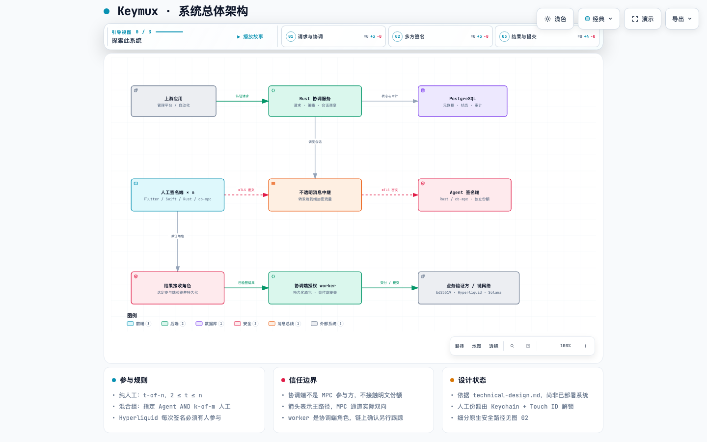

KEYMUX / DESIGN ATLAS
从共同审批，到共同签名。
11 张图串起系统边界、macOS 份额保护、多人协同协议与链上交付。基于技术设计草案绘制，不代表功能已实现。
11 张图 · 5 种视角macOS 优先t-of-n / Agent AND 人工Archify 2.16
系统设计
先理解信任边界，再查看客户端与共享核心。
签名与链上交付
流程、时序和状态互相补充；签名成功与链上确认分别处理。
密钥管理
密钥建立、份额刷新与恢复都有独立的一致性要求。